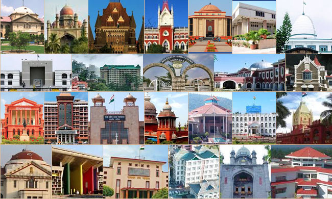

Chhattisgarh is one of the 28 states of India, located in the centre-east of the country. It is the ninth-largest state in India, with an area of 135,192 km2 (52,198 sq mi). [circular reference] With a 2011 population of 25.5 million, Chhattisgarh is the 16th-most populated state in the country. A resource-rich state, it is a source of electricity and steel for the country, accounting for 15% of the total steel produced. Chhattisgarh is one of the fastest-developing states in India
The state was formed on 1 November 2000 by partitioning ten Chhattisgarhi and six Gondi speaking southeastern districts of Madhya Pradesh.The capital city is Raipur. Chhattisgarh borders the states of Madhya Pradesh in the northwest,
Uttar Pradesh in the north, Jharkhand in northeast, Maharashtra in the southwest, Telangana and Andhra Pradesh in the south,and Odisha in the southeast.
Currently the state comprises 28 districts.Chhattisgarh has coverage of mostly two-lane or one-lane roads which provides connectivity to major cities. Eleven national highways passing through the state which are together 3078.40 km in length. However, most national highways are in poor condition and provide only two lanes for slow moving traffic. Many national highways are on paper and not fully converted into four-lane highway. This includes 130A New, 130B New, 130C New, 130D New, 149B New, 163A New, 343 New, 930New.. Other national highway includes NH 6, NH 16, NH 43, NH 12A, NH 78, NH 111, NH 200, NH 202, NH 216, NH 217, NH 221, NH30NH 930 NEW. The state highways and
major district roads constitute another network of 8,031 km.
The climate of Chhattisgarh is tropical. It is hot and humid because of its proximity to the Tropic of Cancer and its dependence on the monsoons for rains. Summer temperatures in Chhattisgarh can reach 47 °C (113 °F). The monsoon season is from late June to October and is a welcome respite from the heat. Chhattisgarh receives an average of 1,292 millimetres (50.9 in) of rain. Winter is from November to January. Winters are pleasant with low temperatures and less humidity.